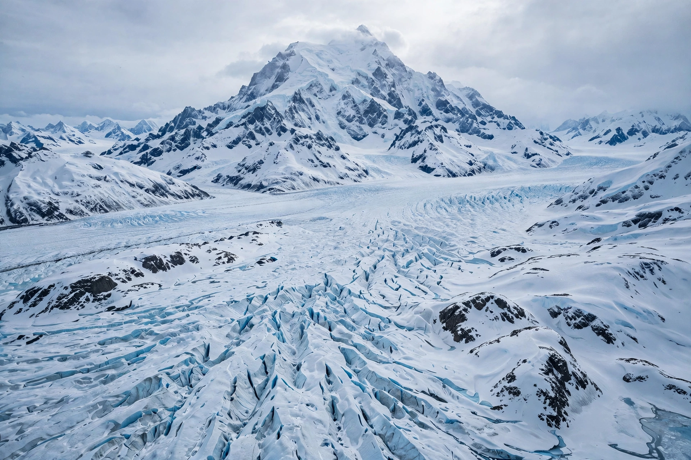

Wrangell–St. Elias National Park and Preserve is an American national park and preserve in south-central Alaska. At 13.2 million acres (about 53,000 km²), it is the largest national park in the United States — roughly six times the size of Yellowstone and larger than Switzerland. The park contains the convergence of four mountain ranges (the Wrangell, St. Elias, Chugach, and Alaska ranges) and nine of the sixteen highest peaks in the United States, including Mount St. Elias (18,008 ft / 5,489 m), the second-highest peak in both the U.S. and Canada.
| Wrangell–St. Elias National Park and Preserve | |
|---|---|
 | |
| Location | Alaska, United States |
| Area | 13.2 million acres (53,321 km²) |
| Established | December 2, 1980 |
| Highest peak | Mount St. Elias, 5,489 m |
| Governing body | National Park Service |
| Status | UNESCO World Heritage Site (part) |
The park spans from the Gulf of Alaska coast to the interior, encompassing enormous glaciers — the Malaspina Glacier, larger than Rhode Island, the Hubbard Glacier, and the Bagley Icefield — as well as active volcanoes of the Wrangell range, including Mount Wrangell, one of the largest andesite shield volcanoes in the world. Together with Canada's Kluane National Park and Alaska's Glacier Bay and Tatenshini-Alsek Provincial Park, it forms the Kluane / Wrangell–St. Elias / Glacier Bay / Tatenshini-Alsek World Heritage Site, one of the largest internationally protected areas on Earth.
The region is the homeland of Ahtna Athabascan and other Alaska Native peoples. Copper deposits near the Kennecott Glacier drew miners in the early 1900s; the Kennecott Mines and the company town of McCarthy, reached by the McCarthy Road, are now the park's best-known historic sites, with the great red mill buildings preserved as a National Historic Landmark. The area was proclaimed a national monument in 1978 and established as a national park and preserve by the Alaska National Interest Lands Conservation Act (ANILCA) in 1980.
Only two gravel roads penetrate the park — the McCarthy Road and the Nabesna Road — and most of the park is roadless wilderness visited by bush plane. Activities include mountaineering, glacier trekking, rafting the Copper River, and backcountry hiking. Visitor numbers are among the lowest of any major national park, only tens of thousands per year, reflecting its remoteness.